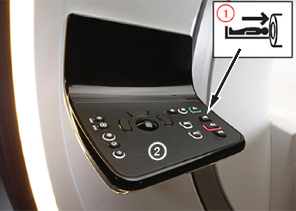

- 00000018WIA305E1130GYZ
- id_152710756.18
- Jul 1, 2025 8:40:44 PM
PET detector calibration
This procedure calibrates the entire PET detector module ring, or integrates a single detector module.
Prerequisites
| Personnel requirements | |||
|---|---|---|---|
| Required persons | Preliminary requirements | Procedure | Finalization |
| 1 | - | 3 hours | - |
| Tools and test equipment | |||
|---|---|---|---|
| Item | Quantity | Part number | Manufacturer |
| PET/MR Annulus Phantom Note Contains germanium-68 (Ge-68). | 1 | E8008PN | Eckert & Ziegler |
| PET/MR Annulus Phantom Holder | 1 | 5458479 | - |
| Required conditions |
|---|
| If the annulus phantom is older than two years, order a new phantom. |
| PET detector cathode search calibration must be completed before proceeding if a PET detector is replaced or for a new system. |
| Safety | ||||||||
|---|---|---|---|---|---|---|---|---|
|
Before working in any GE HealthCare MR suite or doing any GE HealthCare service procedure, you must:
If you have any safety concerns at any time, do not begin work or immediately stop work and move to a safe location. Immediately contact your supervisor or site safety officer for instructions on how to proceed. | ||||||||
| ||||||||
About this task
This procedure calibrates the entire PET detector module ring, or integrates a single detector module. A sequence of tasks (described below) is done during this calibration procedure to bring all detectors into uniform specification.
Even though the user interface allows calibration of individual PET detector modules, all modules must be selected for initial calibration.
- Map (also known as crystal maps) makes sure distinct matrices exist for every crystal block (9 x 4) in the system.
- Energy sets thresholds for each crystal’s energy spectrum and is updated automatically during Silicon PhotoMultiplier SiPM gain.
- Bias or Gain makes sure of uniform (SiPM) gain within a detector module and also across all detector modules in the ring.
- Source Position accounts for any off-centeredness of the phantom in the timing calibration.
- Timing makes sure of uniform time measurement for each crystal’s coincidence events.
Annulus phantom setup
Procedure
- Hold down Table-In
 on the operator control panel for about 3 seconds. The LPCA will start traveling to the back of the bridge. Once the LPCA starts its travel, the user can release the table in button and LPCA travel will continue to the back. The LPCA travel to the back of the bridge takes more than 3 seconds.
on the operator control panel for about 3 seconds. The LPCA will start traveling to the back of the bridge. Once the LPCA starts its travel, the user can release the table in button and LPCA travel will continue to the back. The LPCA travel to the back of the bridge takes more than 3 seconds.Figure 2. Table In button 
1 Table In button 2 Operator control panel NoteOperator control panel is white, not black as shown.
- Insert the posts on the annulus phantom holder into the holes on the LPCA, and push the holder until it clicks into place.
Figure 3. Annulus phantom holder on LPCA 
- Position the annulus phantom in the phantom holder.
Figure 4. Annulus phantom in holder 
PET detector calibration
Procedure
- From the header area of the screen, click the Tools icon
 .
.
Coincidence Timing Calibration (CTC)
About this task
Procedure
- From the header area of the screen, click the Tools icon.
Finalization
Finalization
- Return the annulus phantom to the safe and the phantom holder to its storage location.
- Continue to PET daily quality assurance check. See Calibration Sequence for PET/MR for the complete PET calibrations workflow.